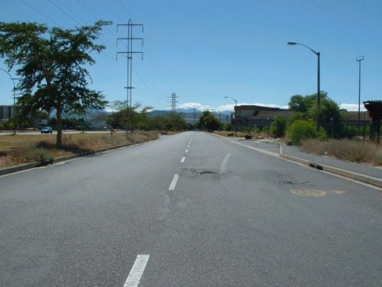
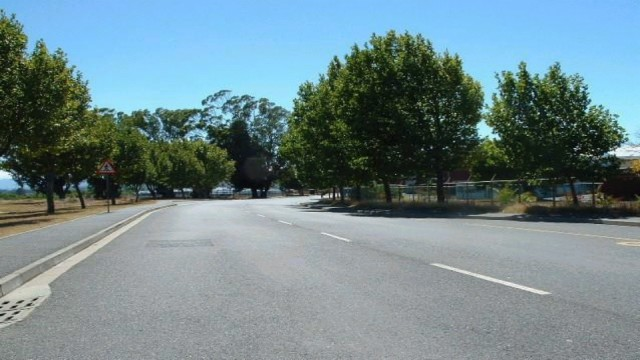
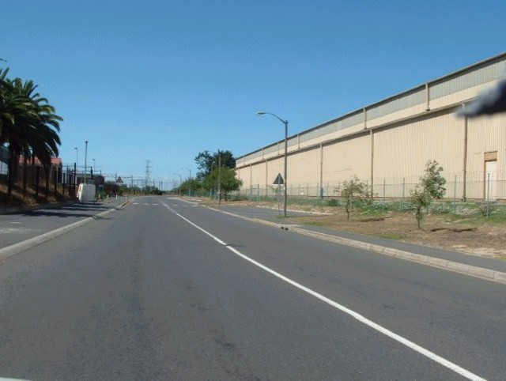

Numbers on the map represent the location where the photographs were taken. Click on links above to view the photographs.
Sacks Circle - Tex Kingon Straight, Station Bend & Park Bend
|| Contents || Tex Kingon Straight to Park Bend (1-6) | Factory Straight to Bellville Bend (7-13) || Home ||
Numbers on the map represent the location where the photographs were taken. Click
on links above to view the photographs.
Return to racingcircuits.net's Photo Archive Main Index

1 - Start/Finish on the Tex Kingon Straight

2 - Left-hand kink after start

3 - Right-hand kink before Station Bend.

5 - Station-Park Straight.
Text & Graphics ©Marius Matthee. Reproduced here with kind permission.